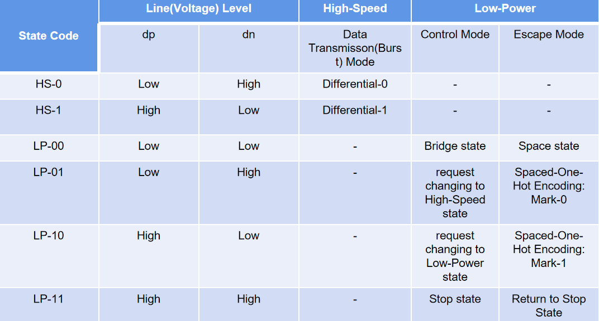
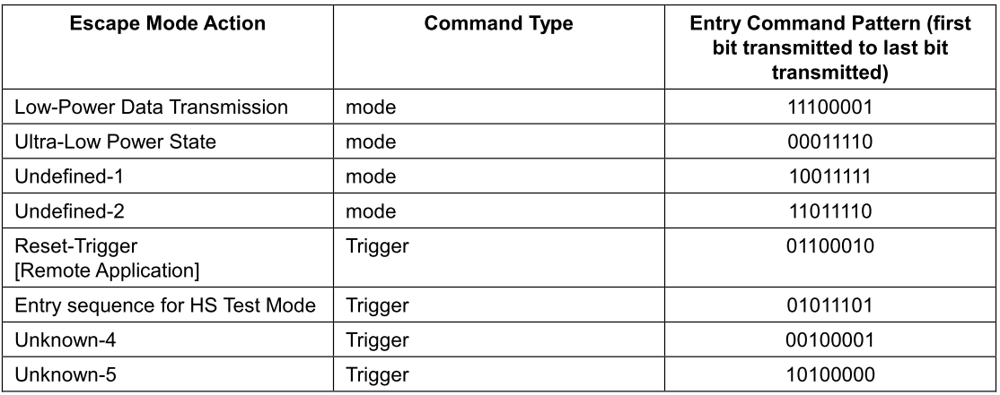
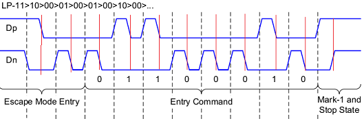
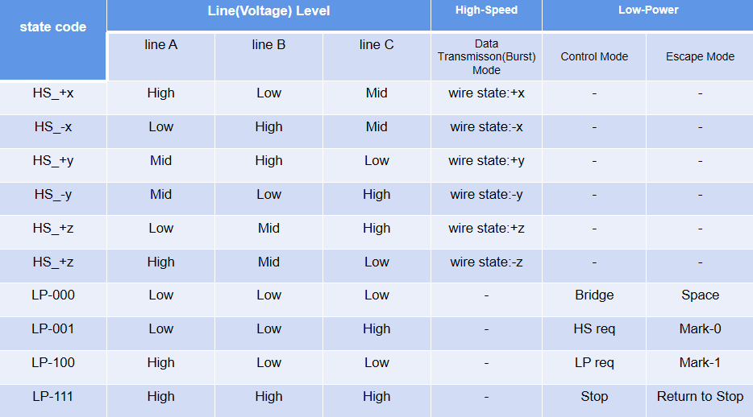
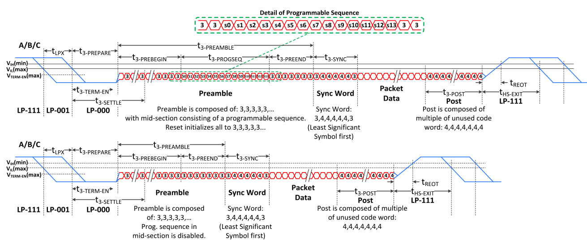

这里来看一下C-PHY和D-PHY的操作模式。
1. C-PHY和D-PHY的总体工作过程
C- PHY和D-PHY，后续统称PHY，都是有不同的电平等级的物理层协议。从逻辑作用上看:- 低电平用于数据传输，称作High-Speed(HS)模式
- 高电平用于切换工作模式，称作Low-Power(LP)模式
一般情况下，在没有传输活动或闲置时，PHY会停留在LP模式下。
以数据发送为例，一旦有活动，PHY会先在LP模式下，在发送端和接收端之间通过data lane发送一连串逻辑值序列以切换两端的工作模式和电平等级到HS。紧接着发送相关数据。数据发送完后再切换回LP模式。
HS和LP有不同的逻辑值表示方式，称作Lane state。C-PHY的HS模式下，Lane state就是wire-state。
2. Lane State
Lane state指在High-Speed(HS)和Low-Power(LP)这两种电平操作模式下data lane上的状态。
- C-PHY的data lane有A，B，C三根线。
- D-PHY的data lane有dn，dp两根线。
2.1 D-PHY lane state
HS模式下，data lane会以低电平变化来传输数据。由于D-PHY使用差分信号，并且dp和dn是由同一个高速发送器(HS-TX)同时差分驱动，逻辑值0，1会以dp与dn的差值来表示，即dp和dn不会在同一电平值上。那么dp与dn只剩两种组合，dp<dn和dp>dn，分别表示状态HS-0，HS-1，用于表示数据。
LP模式下，dp和dn由两个单独的低压发送器(LP-TX)独立发送，那么dp与dn就会有四种组合，逻辑值依次为LP-00，LP-01，LP-10，LP-11，用于表示模式切换。
具体可以总结为下表

HS和LP模式下，dp和dn的电平等级是不同的，这在介绍D-PHY的文章里提到过。LP模式的电平等级和幅度会高一些。
上面表格中，在High-Speed和Low-Power下对应的内容为当前Lane state的作用。
可以看到，在High-Speed下HS-0，HS-1只用来表示逻辑值0，1。
在Low-Power下，又细分了两个不同的模式，Control和Escape。这些模式的切换会用到不同的逻辑值序列，这里不对它们一一的介绍，但会看一些例子来了解它们是怎么工作的，并介绍一下其中用到的Spaced-One-Hot编码方式。
2.1.1 D-PHY操作模式及切换方法举例
在没有活动的时候，D-PHY都会维持在Stop state(LP-11)。
经由不同的Sequence，D-PHY会进入不同的操作模式下。
这个从闲置到切换的过程，D-PHY是处于Low-Power Control Mode下。
2.1.1.1 Control mode switch to HS mode
进入HS模式会用到Start-of-Transmision Sequence。
Start-of-Transmision Sequence的发送步骤是:
In Control mode -> Stop state(LP11) -> HS-Req state(LP01) -> Bridge state(LP00) -> 此时进入了HS模式 -> 发送 HS-0 一段时间 -> 在HS模式下发送entry code = ”00011101” -> 开始HS模式下正常发送目标数据
从步骤上我们可以看出，它经历了由LP到HS的切换，并且在正式发送数据前还要发送一个规定的8位的起始序列”00011101”。
2.1.1.2 Control mode switch to Escape mode
进入步骤是:
In Control mode -> Stop state(LP-11) -> Spaced-One-Hot Encoding Mark-1(LP-10) -> Space State(LP-00) -> Spaced-One-Hot Encoding Mark-0(LP-01) -> Space state(LP-00) -> 此时进入了Escape模式
进入Escape模式的过程和进入HS模式类似，只不过我们不用切换电平等级，也没有多余的entry code。
但是在进入Escape模式下后，Escape的通信会使用一种特殊的编码方式Spaced-One-Hot。
2.1.1.3 Spaced-One-Hot Encoding
Escape模式是PHY用来处理LP模式下附加指令的一个操作模式。
这些附加指令会以LP模式的lane state，经由Spaced-One-Hot编码来发送。
Spaced-One-Hot编码的方式为:
1. 指令序列可以有n位逻辑值
2. 逻辑值具体由Marker-0，Marker-1来表示
3. 两Marker之间必须有Space位
4. 指令序列的以非指令内容的Marker-1 + Stop位来表示
5. 没有同步时钟，以Marker + Space作为一周期
Escape模式下支持的指令有:

拿Reset-Trigger这条指令来说，它有8位逻辑值01100010，对应图像为:

图中红黑线之间为原本PHY使用的一个时钟周期。
在开头部分，先进入了Escape模式。之后开始发送Reset-Trigger指令(01100010)，这里的Spaced-One-Hot编码方式由于Space的加入会和对应的Marker一起在时间上占用两个周期来发送一位逻辑值。
2.2 C-PHY lane state
理解了D-PHY之后，C-PHY就相对容易了。
C-PHY的lane state和D-PHY的格式类似，只不过从两个线dp，dn变成了三根线A，B，C。

这里LP模式下只有4种状态而不是8种是为了和D-PHY的LP状态数一致，保持兼容性。
2.2.1 C-PHY操作模式及切换方法举例
这里还是举几个例子。
2.2.1.1 Control mode switch to HS mode
进入HS模式会用到Start-of-Transmision Sequence:
In Control Mode -> Stop state(LP-111) -> HS request(LP-001) -> LP request(LP-100) -> 进入HS模式 -> 发送Preamble sequence -> 发送Sync Word Sequence -> 开始发送目标数据
2.2.1.2 HS mode switch to Control mode
离开HS模式会End-of-Transmision Sequence:
In HS Mode -> 发送完成目标数据 -> 发送Post Sequence -> 进入LP模式Control Mode -> Stop state(LP-111)
2.2.1.3 Sequences
这里的Preamble sequence和Sync Word Sequence都是一串连续的symbol序列。除这两个外还有Programmable Sequence和Post Sequence等其他symbol序列。
在介绍C-PHY 编码的文章中提到过，symbol的编码表示空间要比原始16-bit的数据的表示空间大得多，有很多编码值是没用到的。这些没用到的编码就会在这些sequence中使用到。
比如Preamble sequence，它的形式是: 在t_3-preamble时间内连续发送重复symbo- 3(011)。
t_3-preamble是一个规定的时间长度。Preamble sequence还可以穿插Programmable Sequence。Programmable Sequence是一个由14个symbol组成的序列。
对应的，Post Sequence是在t_3-poSt时间内连续发送重复symbo- 4(100)。
t_3-post也是一个规定的时间长度。
再比如Sync Word Sequence，它的形式是7个symbol: 3,4,4,4,4,4,3。
Preamble Sequence的例子可以参照下图

3. 小结
为了基本了解PHY的工作步骤，本文介绍了PHY的工作模式和模式切换情况，并介绍了Spaced-One-Hot编码形式。整体来看，C-PHY和D-PHY工作模式基本相同，但区别是电平等级，导线数量和对应的模式切换序列。